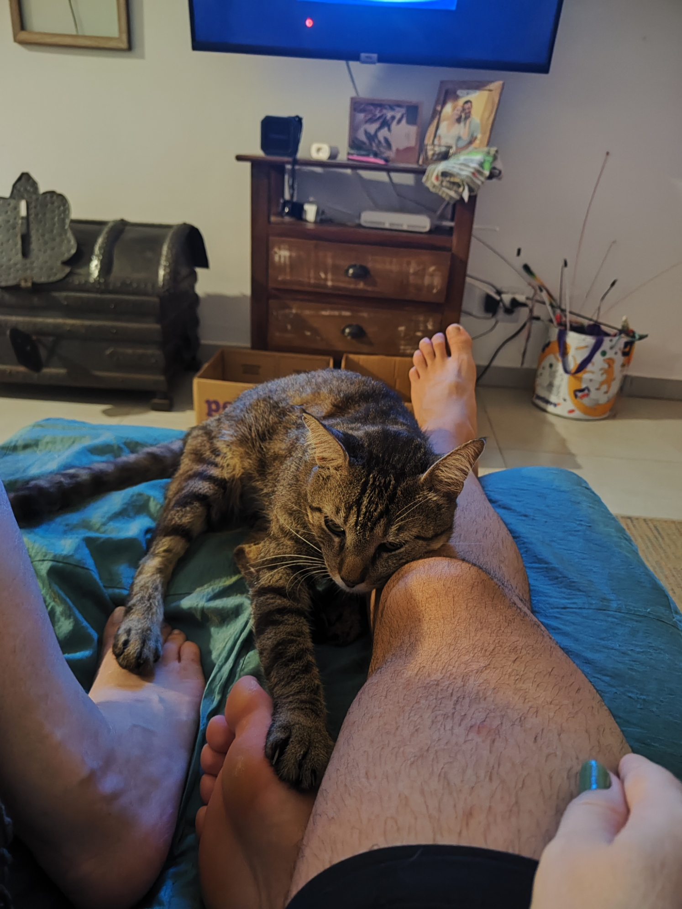

À Rua Gamboa, no loteamento Vale Verde, no Bairro Bela Vista, no município de Palhoça, no estado de Santa Catarina, no Brasil, na América do Sul, no continente Americano, no planeta Terra, no Sistema Solar, na Via Láctea, no cluster de galáxias GA135744a, etc., vivem dois gatos muito fofinhos e pentelhos.
Laranjo é um gato laranja e branco.
Ele tem 13 anos, foi resgatado e adotado bem novinho e gosta muito de ficar junto com humanos.
Tem muito medo de barulhos, como fogos de artifício e trovoadas.
Come de tudo e não tem firulas
|
|
Ícaro é um gato rajado cinza, preto e bege.
Ele tem aproximadamente 6 anos, vivia na própria rua Gamboa e foi adotado à 3 anos.
É o mestre das fugas e muito resmungão, porém é muito fofifnho e carinhoso.
Hoje está cheio de frescuras e só come comida cara, ou alguma coisa que ele consiga caçar no mato.
Está passando por um tratamento de saúde complicado.
|  |